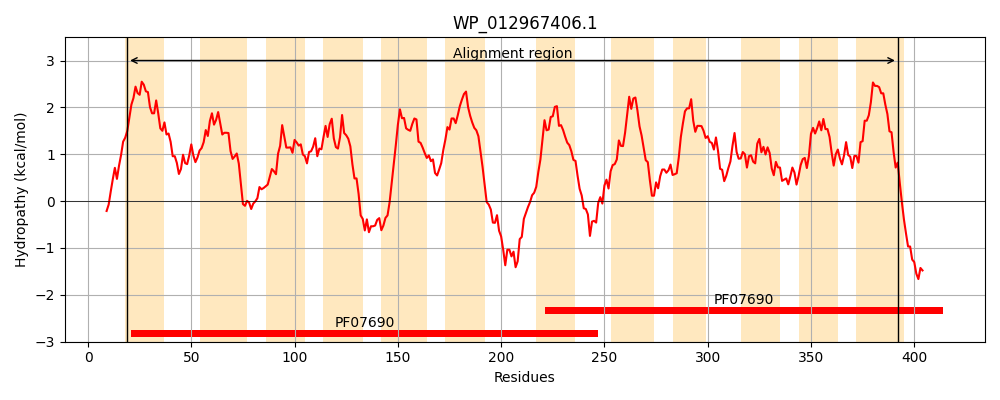
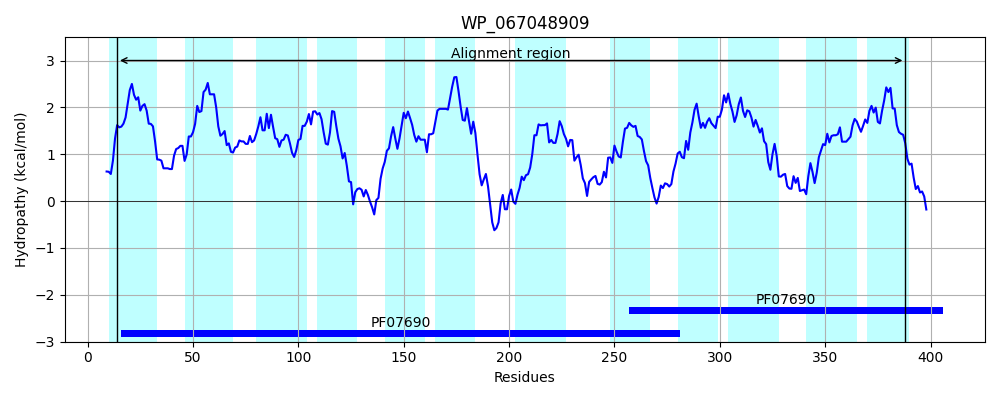
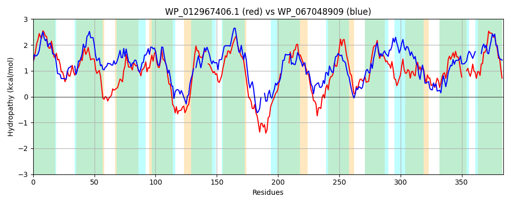

Hit Accession: WP_067048909
Hit TCID: 2.A.1.68.2
Hit Description: gnl|BL_ORD_ID|21323 gnl|TC-DB|WP_067048909.1|2.A.1.68.2 MFS transporter [Methanofollis ethanolicus]
Mach Len: 384
e:0.000000
Query TMS Count : 12
Hit TMS Count: 12
TMS-Overlap Score: 11.250000
Predicted Substrates:None
BLAST Alignment:
Score: 349 , Bit scores: 139 bits, E-value: 4.6e-37, Alignment length: 384, Percentage identity: 26
Query: 19 IIIALTAFLPILAIVSLAPAVPTLIQHFAGVPYVETLVPLMLTAPGLVIAIAGPCTGWLADKFGRRKLLLSATLLYGICGTMPLYITSLTGIFCSRLGVGLAEAVVLTIANTMLIDYFDDKQRRFWLTVQGVIGPALAVLVL-ASSGYLTALRWNGAFMIYFVAILLFLAMYFWMFEPAQAARPQHAAQAAQHNQFPWPRVIT------LSVLTFVCAIIYYVYTINGANAFHTLQNATPQRIGLIMSLVSLAVPVGSLLFGLVSRRYTPERVLAIMLCLMGIGMLVVGESRTVIAMGIGSAIQQLGAGMAINAMIYWVGSLIPPAYCGRAMGAWSGAFFAGMFVSPIIVG---AIRLRAGNDVLSAFLTLGIAALVLAAAIFL 392
+ + L A L ++ ++APA+P + + F + V L++T P L IA+ G G L+D+ G+ +L+++ ++ I G+ Y+TSL I R +G+ A + +++++ Y++ R L Q + VL+L S G L + W AF+IY V +++ + M EP + ++ A +FP ++ L + F I + Y I G +A L T G+ + ++ A L +G ++ R+ +LA+ L GIG +G + ++ A+ G G+ + ++ W+ ++ P + GRA G +S A G F S + + AI + GN FL G A VLA L
Sbjct: 14 LFLMLAAMLILMGGAAIAPALPLISEAFPDAS--DAAVALIVTLPALAIALTGVFIGALSDRIGKIPVLVASVAIFTIAGSSGFYLTSLYAILVGRFILGIGIAGITCTTSSLIVCYYEGATRTRVLGYQAA-AMGIGVLILEVSGGLLAGISWRAAFLIYLVGVVILAGVLLTMKEPVLPSIGRNT--VASDEKFPVAPLLAGYSTLFLGSMLFFLMPIKFPYFIAGMDAARVLGENTALTSGVFLGIMGCAASFMGLFYGRLAWRFHRYTILALTFLLFGIGYCSLGLATSLAAVAFAVICIGFGNGILMPTILTWIAAVTPRQFLGRASGGFSVALNIGQFASTLAIASVTAIAVTYGN----LFLMFGCVAFVLALPYLL 388 | Protein Hydropathy Plots: |
|---|
|  |  |
Pairwise Alignment-Hydropathy Plot:
|
|---|
|  |